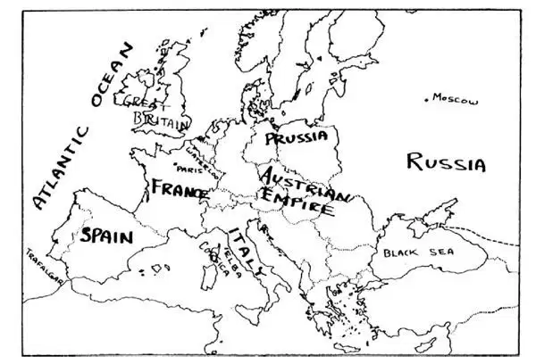
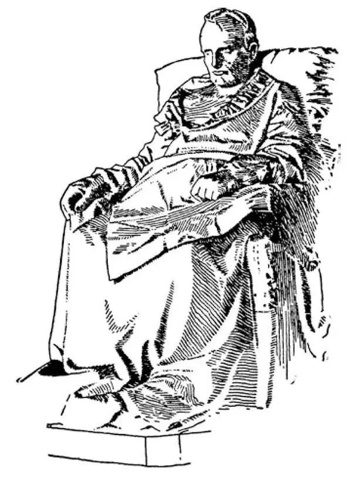

77
A Little Giant
矮小的巨人

AT last the Revolution was stopped.
It was stopped by a young soldier only about twenty years old and sixty inches tall.
The Government was holding a meeting in the palace while an angry mob in the streets outside were trying to attack the palace. A young soldier had been given a few men and told to keep the mob away. The young soldier pointed cannons down each street that led to the palace, and no one dared to show himself. The young soldier was named Napoleon Bonaparte. He made such a fine record that people wanted to know who he was and where he came from.
Napoleon had been born on a little island called Corsica in the Mediterranean Sea. He was born just in time to be a Frenchman, for the island of Corsica had belonged to Italy and had only just been given to France a few weeks before he was born. As soon as he was old enough, he was sent off to a military school in France. There, his French schoolmates looked upon him as a foreigner and didn't have much to do with him. But Napoleon made high marks in arithmetic, and he loved hard problems. Once he shut himself up in his room to work over a hard problem, and there he stayed for three days and nights until he had found the answer.
Napoleon showed early in his career that he was going to be a fine soldier, and when he was only twenty-six years old he was made a general.
Now, at this time all the other countries of Europe had kings. France had caught the fever of revolution from the Americans all the way across the ocean and had got rid of her kings. The kings of these other countries were afraid their people might catch the fever of revolution, too. All of these other countries became enemies of France because France had put an end to her kings. Besides that, the French army was invading France's neighbors to help them get rid of their kings. So, once again, war was on.
Napoleon was sent off to fight Italy. He had to cross the Alps, which Hannibal in the Punic Wars had crossed long before. But Hannibal had no heavy cannons when he crossed; it seemed impossible for Napoleon's army to cross with cannons. Napoleon asked his engineers, the men who were supposed to know about such things, if it could be done. They said they thought it was impossible.
“Impossible,” Napoleon angrily replied, “is a word found only in the dictionary of fools.” Then he shouted:
“There shall be no Alps!” and went ahead and crossed them. His army won in Italy, and when he returned to France he was greeted by the people as a conquering hero. But the men who were then governing France were afraid of him. They feared he might try to make himself king because he was so popular with the people. Napoleon, however, asked to be sent to conquer Egypt because he had an idea he could get the better of the English there. He thought he might then cut England off from India, the colony that they had won in the reign of James I. England had lost America and didn't want to lose India, too.
The French Government was very glad to get rid of Napoleon, and so they sent him off to Egypt as he asked. He quickly conquered Egypt as Julius Caesar had done, but there was no Cleopatra to upset his plans. While he was conquering Egypt, his fleet, which was waiting for him at the mouth of the Nile, was caught and destroyed by the English fleet under a great admiral, if not the greatest that ever lived. His name was Lord Nelson.

Europe in 1815（1815年的欧洲）
Napoleon had no way to take his army back to France. He left his army in Egypt under command of another. He himself, however, managed to find a ship to take him back home. When he reached France, he found that the men who were supposed to be governing were quarreling among themselves, and, seeing his chance, he had himself made one of three men chosen to rule France. He was called first consul; and there were supposed to be two assistant consuls but the assistants were little more than clerks to do Napoleon's bidding. It was only a very short time before he was next made first consul for life. Then, not long after that, he became emperor of France and also king of Italy.
The other countries of Europe began to fear that Napoleon would conquer them, too, and make them also a part of France. All the other countries joined together to beat him. Napoleon planned to conquer England first, and he got ready a fleet to cross over to England. But his fleet was caught off Spain near a point called Trafalgar by the same English admiral, Lord Nelson, who had beaten him in Egypt. Before this battle, Nelson said to his sailors, “England expects every man to do his duty,” and they did it. Napoleon's fleet was utterly destroyed, though Nelson himself was killed.
Napoleon then gave up the idea of conquering England, and he turned his attention in the opposite direction. He had beaten Spain and Prussia and Austria. Almost all Europe either belonged to him or had to do what he said. He then attacked Russia. It was a great mistake he made, for Russia was far off and very large, and it was wintertime and very cold. Still, he managed to reach Moscow way off in the center of Russia with his army. But the Russians burned the city and destroyed all the food, so that Napoleon had nothing with which to feed his army. It was terribly cold; there were deep snows; and, in retreating, his army suffered enormous losses. Napoleon himself soon made a beeline to Paris, leaving his soldiers to get back the best way they could. Men and horses died of cold and hunger by the thousands. Napoleon reached Paris, but his fortune had turned. All of Europe was getting ready to put an end to the tyrant, and it was not long after this that he was hemmed in and beaten by his enemies.
When Napoleon saw that he was beaten, he signed a paper saying that he would give up and leave France. This he did, sailing away to a little island called Elba, just off the coast of Italy, not far from the island where he was born.
But Napoleon, on the island of Elba, got an idea that all was not lost and that he might return to France and get back his power again. All of a sudden, to the surprise of France and the rest of the world, he landed on the coast of France. The French government at Paris sent an army of his old soldiers against him with orders to meet him and bring him to Paris in an iron cage. But when his old soldiers met their old general, they went over to his side, and so with them he marched on to Paris. The English and German armies were north of France and preparing to fight. Napoleon quickly got together an army and went forth to meet them. At a little town called Waterloo, Napoleon fought his last battle, for there he was utterly beaten by an English general named Wellington. This was the year 1815. We still speak and probably always will speak of any great defeat as a Waterloo .
There is a peculiar sentence which reads backward the same as forward. It is what Napoleon might have said after all was over. It is
ABLE WAS I ERE I SAW ELBA

Napoleon at St. Helena （拿破仑在圣赫勒拿岛）
After Napoleon was beaten at Waterloo, the English took him away and put him on a little island far off in the ocean where he could not possibly escape. It was a lonely spot named St. Helena after the mother of Constantine. Here he lived for six years before he died.
Napoleon was probably the greatest general that ever lived, but that does not mean that he was the greatest man. Some say he was the worst, for just to make himself great, he killed hundreds of thousands of people and brought destruction and ruin to the whole of Europe wherever he fought his battles.
This brings us up into the nineteenth century, for Napoleon died in 1821. How long ago is that?
【中文阅读】
法国大革命终于结束了。
一个年轻的士兵使它结束了，他大约20岁，身高只有60英寸。
政府正在王宫里开会，而此时外面街道上愤怒的暴徒正企图攻打王宫。一个年轻的士兵受命带了几个人，去赶走暴徒。这个年轻士兵将大炮对准通往王宫的每一条街道，这下子没人敢露面了。这个年轻士兵名叫拿破仑•波拿巴。由于这一次表现非同寻常，人们想知道他是谁，是从哪儿来的。
拿破仑出生在地中海一个叫科西嘉的小岛上。他出生很及时，正好成为法国人，因为科西嘉岛以前属于意大利，就在他出生前几周才划归法国。他刚够年龄，就被送到法国的一所军事学校学习。学校里的法国同学瞧不起他，把他当作外国人，不愿和他交往。但是拿破仑算术成绩得分很高，他还喜爱解难题。有一次为了钻研一道难题，他把自己关在屋里，待了三天三夜，直到解出答案。
在职业生涯早期，拿破仑就表现出优秀的军事潜质，在年仅26岁时，就擢升为将军。
当时欧洲其他国家都有国王。而法国却染上了从大洋彼岸美国传来的革命热，除掉了自己的国王。其他国家的国王们担心他们的人民也会染上革命热。所有这些国家都变成了法国的敌人，就因为法国终止了国王的统治。此外，法国军队不断侵入邻国要帮助它们除掉自己的国王。所以，战火又一次燃起来。
拿破仑被派去攻打意大利。他必须越过阿尔卑斯山，这座山很久以前汉尼拔在布匿战争中翻越过。但是汉尼拔翻越大山时没有沉重的大炮；拿破仑的军队要带着大炮翻山越岭似乎是不可能的。拿破仑问他的工兵是否能做到，这些工兵按说对这类事是比较了解的。他们回答说他们认为不可能。
“不可能，”拿破仑气冲冲地回应，“这个词只有在蠢人的字典里才能找到。”接着他喊道：
“让阿尔卑斯山见鬼去吧！”拿破仑冲向前，带领军队越过了阿尔卑斯山脉。他的军队在意大利打了胜仗，当他回到法国时，人们把他看做凯旋的英雄，热烈欢迎他。但是当时统治法国的那些人害怕他。担心他会自立为王，因为他现在深得人心。然而拿破仑要求被派去征服埃及因为他觉得他能在那里战胜英国人。他认为到时候他就可以切断英国与印度的联系，印度是詹姆斯一世统治时期英国人赢得的殖民地。英国已经失去了美国，当然不愿再失去印度。
法国政府巴不得让拿破仑离开法国，于是他们应他的要求把他派到了埃及。像恺撒大帝当年那样，他很快征服了埃及，但是这一次没有克娄巴特拉那样的女人来搅乱他的计划。他在征服埃及时，一支在尼罗河河口正等候要跟他会合的舰队，却遭到英国舰队的袭击并被摧毁，指挥英国舰队的是一位了不起的海军将领，几乎可以算得上当时世界上最伟大的海军将领。他的名字叫纳尔逊勋爵。
拿破仑没有办法把军队带回法国。他把留在埃及的军队交给另一个人统领。但是他自己设法找到了一艘可以搭乘回国的船。当他到达法国时，他发现那些执政者正在争吵，他瞅准了自己的机会，让自己被选为统治法国的三人之一。他被称为第一执政官；照理说在位的还有两位副执政官，但是这两位副执政官只不过是听命于拿破仑的小职员。只过了很短的时间，他就被任命为终身第一执政官。再不久，他就成了法国皇帝，同时还是意大利国王。
欧洲其他国家开始担心拿破仑也会征服它们，使它们成为法国的一部分。为了挫败他，所有这些国家都联合起来。拿破仑计划先征服英国，他准备好一支舰队，要横渡海峡去英国。但是他的舰队在西班牙沿海靠近特拉法尔加角的地方被英国海军司令纳尔逊勋爵拦截了。纳尔逊勋爵就是在埃及曾打败拿破仑的那位将领。这场 战役打响前，纳尔逊对水兵们说，“英国期望每个国民为国尽责”，他们做到了。拿破仑的舰队被彻底摧毁了，不过纳尔逊本人在这次战役中阵亡了。
这时拿破仑放弃了征服英国的念头，把注意力转向相反的方向。他已经打败了西班牙、普鲁士和奥地利。几乎整个欧洲要不就是属于他，要不就是不得不听命于他。接着他进攻俄国。这是他犯的一个大错误，因为俄国离欧洲很远，幅员广大，又时值冬季，天寒地冻。尽管如此，他还是率领军队克服困难，到了俄国中心的莫斯科。但是俄国人一把大火烧了这座城市，把所有的粮食都毁了，这样拿破仑没有任何食物给士兵们吃。天极冷，处处积雪很深，在撤退的途中军队损失惨重。拿破仑自己很快就沿一条捷径直奔巴黎了，而让士兵们自己寻路而归。成千上万的人和马死于严寒和饥饿。拿破仑抵达巴黎，但是他的时运开始下跌。全欧洲正做好准备除掉这个暴君，不久以后他就在敌人的包围之下被打败了。
拿破仑看到大势已去，于是签署了一份文件宣布他将退位并离开法国。他说到做到，乘船离开法国去了一个叫厄尔巴的小岛，就在意大利海岸边，离他出生的那座岛不远。
但是在厄尔巴岛上拿破仑产生了一个想象，他觉得自己并未全盘皆失，还有可能返回法国，重掌大权。突然，他在法国海岸登陆了，让法国和全世界大吃一惊。巴黎的法国政府派出一支由他的旧部下组成的军队去抗击他，还授命他们去迎战他，把他装在铁笼子里押回巴黎。但是当这些旧老部下遇到他们旧日的将军，他们反而站到他那一边，跟随他向巴黎进发。在法国之北，英德两军正准备开战。拿破仑很快集结起一支军队，向北前去迎战他们。在一个叫滑铁卢的小镇，拿破仑打了最后一次战役，因为在那里他被一位名叫威灵顿的英国将军彻底打垮了。这场战役的时间是1815年。我们现在还把任何一次惨痛的失败比喻成“滑铁卢”，今后这个比喻可能会一直用下去。
有一个古怪的句子，倒着念和顺着念是一样的。拿破仑也许在一切都结束以后，说过这句话。这句话是
“在我看见厄尔巴岛之前，我能力非凡。”
拿破仑在滑铁卢被打败以后，英国人带走了拿破仑，把他流放到海上一个遥远的小岛上，他是不可能从那里逃走的。这个人迹罕至的岛名叫圣赫勒拿岛，是以君士坦丁大帝母亲的名字命名的。他在那里生活了六年后死去了。
拿破仑可能是历史上最伟大的将军，但这并不意味着他是最伟大的人。有些人说他是最恶之人，因为仅仅为了个人的成就，他不惜让千万人失去生命，无论他在哪里发动战役，都给整个欧洲带来了破坏和毁灭。
说到这里，我们进入了19世纪，因为拿破仑死于1821年。那是多久以前的事情了？